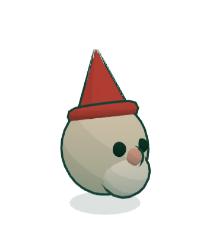

<!doctype html>
<html lang="en">
<head>
<meta charset="utf-8">
<meta name="viewport" content="width=device-width, initial-scale=1, viewport-fit=cover">
<title>The gnome shop · Gnogolf mockup</title>
<link rel="stylesheet" href="kit.css">
<!-- The static page Netlify serves for /g/* where the shop is not offered (netlify.toml's country rules:
     best effort, no blame). The game itself stays whole: this page only says the shop is not here, and
     opens the game. In the game, in those regions, the shop's links and actions are simply absent
     (the client reads /geo.json once, when the shop would open). One state. -->
<style>
  .rg { width: min(460px, 100%); margin: 0 auto; display: grid; gap: var(--sp-4); justify-items: center; text-align: center; }
  .rg .gtile { width: 168px; border-radius: var(--r-panel); box-shadow: var(--deep-card); }
  .rg p { margin: 0; font-size: 16px; line-height: 1.45; }
  .rg .btn { margin: 0; }
</style>
</head>
<body>
<main class="front tint--garden" id="app"></main>
<script src="kit.js"></script>
<script>
  const { ICON, netbanner } = Kit;
  document.getElementById("app").innerHTML = `
    <div class="rg">
      <span class="gtile tint--garden"></span>
      <span class="eyebrow--pill">The gnomes</span>
      <h1 class="display display--m inked">Not in your region</h1>
      <p>The gnome shop is not offered in your region. The game stays free to play: every hole, every cup, and the gnomes you earn by playing.</p>
      <a class="btn btn--gold btn--cta" href="#">${ICON.play} Play Gnogolf</a>
    </div>
    ${netbanner()}`;
</script>
</body>
</html>
